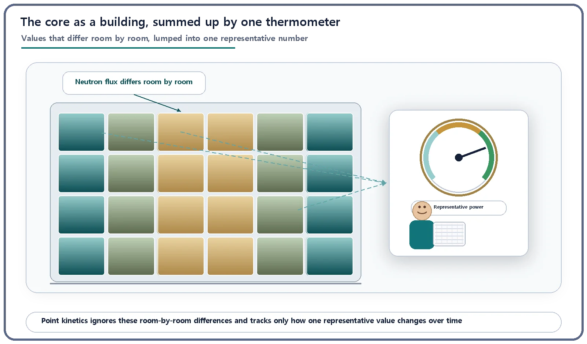
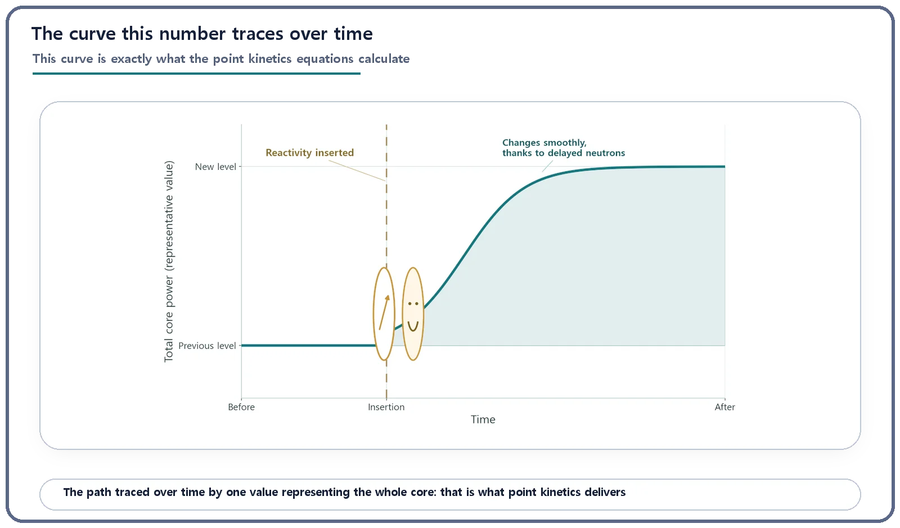

Reactor Kinetics & Reactivity · 104
One Thermometer for a Whole Building — What the Point Kinetics Equations Do
Set aside where the neutrons are and follow one number over time: total core power. Delayed neutrons keep its changes slow enough to control.
The point kinetics equations ignore how the neutron flux varies from place to place in a core and track only how one value representing the whole core, total power, changes over time. They assume the flux keeps its shape while its size changes, turning a heavy space-time problem into a few equations in time, and their delayed-neutron terms explain why reactor power changes slowly enough to control.
Every room is different
Picture a large office building. The sunny south offices are stuffy, the shaded north storeroom is cool, and the room next to the plant room is always a little warmer. Yet the manager's office has just one thermometer, and the manager reads that single number to decide whether the building is warming up or cooling down. It won't give you each room's temperature, but it is enough to judge which way the building as a whole is heading.
The same thing happens inside a reactor. The neutron flux, the value describing how actively neutrons move at each location, differs from place to place in the core: lively in the center, quieter at the edges. Methods such as diffusion theory calculate that spatial pattern in detail. But to answer "is reactor power rising or falling right now, and how fast?" you often don't need the full picture. Watching how one number that represents the whole core, total core power, moves over time is usually enough. The point kinetics equations are the reactor's version of reading one thermometer for the whole building.
Why one number can be enough
We accept this kind of summary all the time. To judge a country's economy, we don't tally tens of millions of household budgets; we use one number, gross domestic product (GDP), to see whether the economy is growing or shrinking. GDP can't tell you which neighborhoods are thriving, but it shows which way the whole economy is heading.
Point kinetics works on exactly this idea. It sets aside the "neighborhood detail," the shape of the flux across the core, and calculates only how one representative value (the total neutron population, or the total power proportional to it) changes with time. Hence the name: the whole core is collapsed, in the calculation, into a single point, and only that point's rise and fall is followed.
What gets flattened, and what's kept
The real flux depends on position and time at once. Solving it as it is means solving space-time kinetics equations for the whole core at every moment, an enormous amount of computation.
Point kinetics makes one bold assumption: the spatial shape of the flux (where it is relatively stronger or weaker) stays almost unchanged, and only the overall size of that shape grows or shrinks. In building terms, "the south offices are always warmer than the north storeroom" stays true while the whole building warms and cools as one. Mathematically, the flux is split into a fixed shape times a time-varying amplitude, φ(r, t) ≈ n(t) × ψ(r), and the tangled space-time problem shrinks to a few simple equations in time alone.

Here's what the equations look like
Simplified to a single representative group of delayed-neutron precursors:
dn/dt = [(ρ − β) / Λ] × n + λ × C
dC/dt = (β / Λ) × n − λ × C
- n: the neutron population representing the whole core, i.e. total core power. It is the thermometer reading.
- ρ (reactivity): how far the reactor is from exact balance (criticality). Above zero, power heads up; below zero, down; exactly zero, it holds steady. "Adding reactivity" sets the direction and speed of future change; it does not set the power itself.
- β (delayed neutron fraction): most fission neutrons appear almost instantly (prompt neutrons), but a small share appear later as fission by-products decay (delayed neutrons). The typical textbook value is below 1%: about 0.65% for thermal fission of uranium-235. It varies with nuclide and spectrum and is not a confirmed value for any particular plant.
- Λ (neutron generation time): the time for one generation of neutrons to cause the next generation's fissions, roughly 10⁻⁵ to 10⁻⁴ seconds in thermal reactors and around 10⁻⁷ seconds in fast reactors. Exact values depend on reactor design; the point is that it is extremely short.
- λ and C: λ is the decay rate of the "precursor" nuclei that later release delayed neutrons; C is how many precursors are built up in the core, a reserve stock of delayed neutrons still to come.
Textbooks normally use six precursor groups with different decay constants; this one-group form shows the idea, while real safety-analysis codes use the multi-group form.
The delayed-neutron terms are the heart of it. Without them, power would change on the tiny time scale of Λ alone, in an instant, leaving no time to act. With delayed neutrons mixed in, the reactor responds at a pace people and control systems can follow. These terms are not a side correction; they hold the reason a reactor is controllable.
What you get: power's curve over time
Solving the equations gives the trajectory of total core power (n) over time. How reactivity is supplied (control-rod movement, temperature changes and so on) shapes the curve, and thanks to delayed neutrons it shows up not as an abrupt step but as a smooth change people can respond to.

Not the same simplification as diffusion theory
Diffusion theory replaces individual neutron paths with a smooth flux distribution, but it still works out where the neutrons are, in detail. Point kinetics simplifies along a different axis: it discards that spatial information (or freezes its shape) and follows only how active the whole core is over time. If diffusion theory draws a precise temperature map of every room, point kinetics ignores the map and logs the one thermometer. They are tools for different questions, not rivals: diffusion (or the more exact transport) theory when the spatial distribution matters, as in core design; point kinetics when the question is how total power changes with time.
Where it's used, and where it stops working
Point kinetics is a basic tool wherever a quick picture of total-power response is needed: operator training simulators, early-stage safety analysis and control-system design reviews. For changes that affect the whole core evenly, such as coolant temperature drifting across the entire core, the spatial shape stays intact and the approximation fits well.
When the distribution itself is badly distorted, for instance reactivity spiking in one small spot of the core, the "fixed shape" premise breaks down, and three-dimensional kinetics that treats space and time together is needed. Point kinetics is not a do-everything tool, but a starting point that dramatically cuts computation whenever the whole core moves to nearly the same rhythm.
Common mix-ups
"Point" does not mean the reactor is tiny; it names the mathematical shortcut. Reactivity is not power: a positive ρ means power is heading upward, not that it is already high in megawatts. And point kinetics is not a "time version" of diffusion theory; it is a separate approximation that sets space aside altogether.
The takeaways
- Point kinetics ignores the position-by-position flux distribution and calculates only how one value representing the whole core (total power) changes over time, like judging a building by one thermometer or an economy by GDP.
- Diffusion theory computes the spatial distribution; point kinetics flattens it and watches only time. They simplify along different axes.
- A few quantities, ρ, β, Λ and C, give the curve total power traces over time, and the delayed-neutron terms slow that change to a manageable pace.
- When one spot in the core fluctuates strongly on its own, the premise breaks down and analysis that includes space is needed.